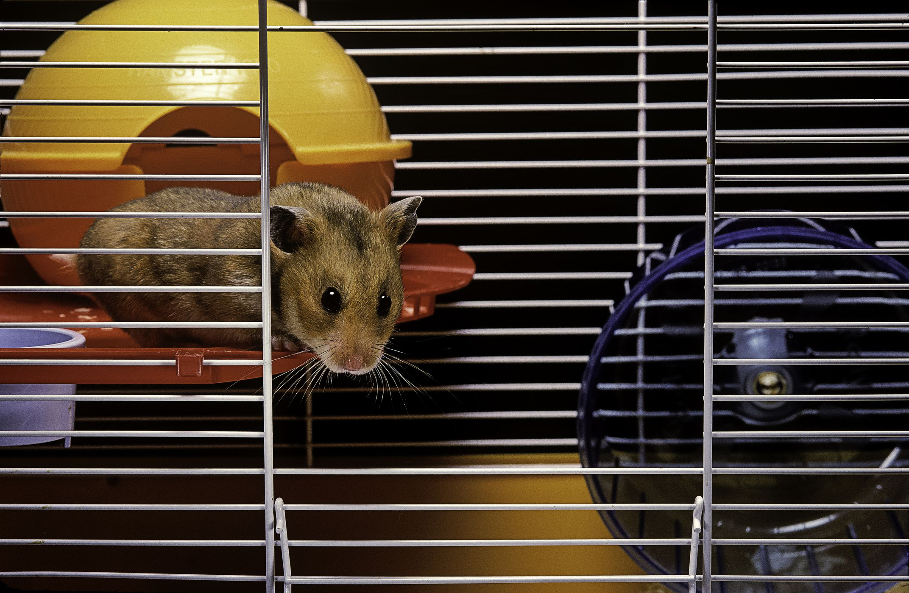
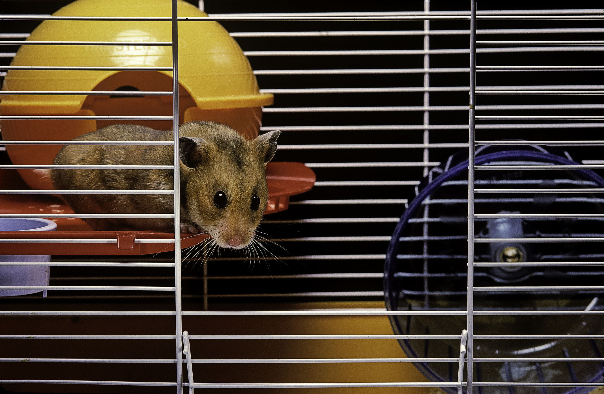
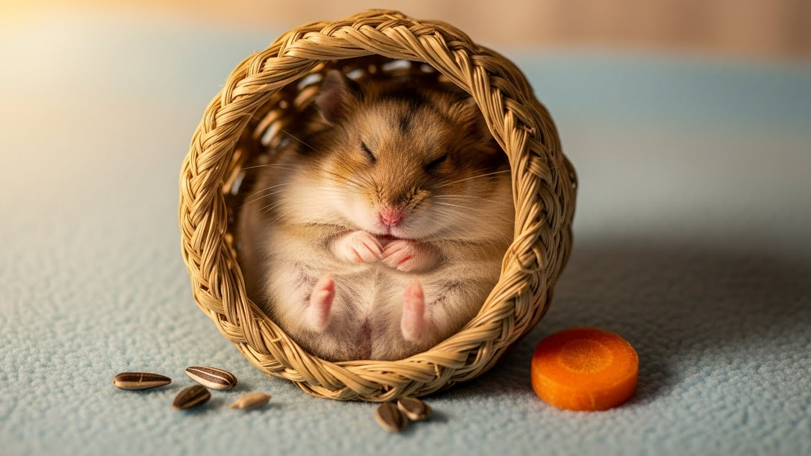
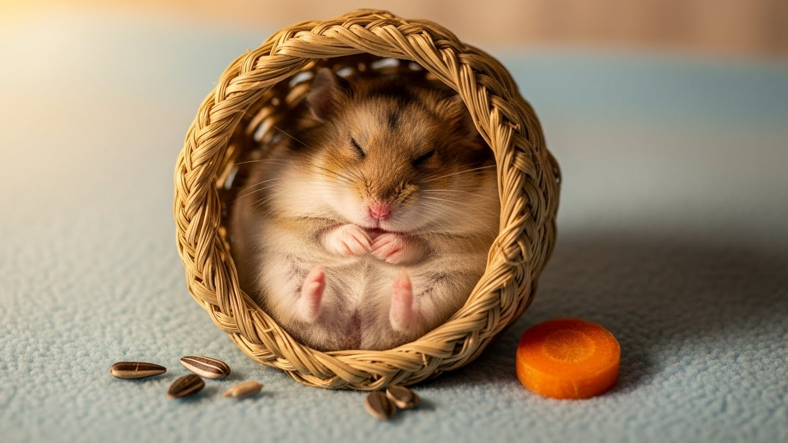

1. Basic Care
Essential daily routines and housing requirements for your hamster
Daily Routines
- Feeding: Once or twice daily, primarily in evenings due to nocturnal habits (1-2 tbsp pellets)
- Water: Fresh, clean water available at all times; change daily
- Cleaning: Spot clean soiled bedding and toilet area daily
- Playtime: Supervised exercise outside cage and wheel running nightly
- Handling: Gentle interaction 10-15 minutes daily once bonded
Housing Requirements
- Cage Size: Minimum 450-900 sq in floor space (Syrian: 900 sq in; Dwarf: 700 sq in)
- Bedding: 6-8 inches deep dust-free substrate for burrowing throughout enclosure
- Safe Spaces: Multiple hideouts, tunnels, chew-proof materials
- Hamster-Proofing: Secure wires, no small gaps; quiet location away from drafts
Essential Supplies Checklist
✅ Spacious cage with deep bedding
✅ High-quality hamster pellets/seeds
✅ Water bottle
✅ Exercise wheel (27-31cm Syrian, 22-25cm dwarf)
✅ Hideouts and nesting material
✅ Chew toys
✅ Food dish
✅ Exercise ball for supervised use
✅ Carrier for vet visits
✅ Dust-free bedding
✅ Toilet corner setup


 

 
